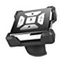
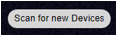
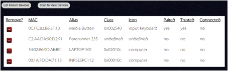
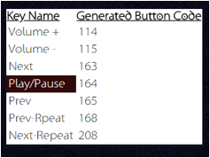

Currently only a few devices have been tested.
· Eximtrade Car Bike Steering Wheel Bluetooth Multimedia Remote Control for iOS Android
· Satechi Bluetooth Button Series (Media Button)

Intended to help teachers using the Tanda Player to remotely operate the music without the need to return to the laptop or get their phone out, these buttons allow basic operation at the press of a button from anywhere up to about 10 meters away and it is not a line-of-sight device like infra-red remote controls and as such can be used even if surrounded by people or just not able to see the Tanda Player.
These media buttons have the following controls:
· Volume Up
· Volume Down
· Previous
· Play/Pause
· Next
Bluetooth buttons run on small batteries and try to preserve their power by constantly shutting down. The Satechi model in particular is very quick to power down; it also has the smaller battery of the two devices shown. As a result, after a very short time the user may need to press a button just to wake up the device and force a re-connection with the Tanda Player. Typically this button press goes un-noticed by the Tanda Player’s applications but just re-connects the device. After a second or so the device should work almost immediately. Therefore, when using the Bluetooth controls it is good practice (as you will most likely have waited a whole song before needing to use again) always just press a single button such as the volume up/down buttons once before then pressing your actual request.
The Tanda Player uses these buttons in such a way that more options are available than buttons through double clicking a button if the configuration page setting has been set to support double-click.
Consequently if double-click is enabled there is a short delay added by the Tanda Player before it acts on a button press whilst it waits to see if you press the button twice. Also, the operations that the Tanda Player performs for these controls are dependent upon the mode of operation at the time.
· Volume Up – Increase the volume by 3%
· Volume Down – Decreases the volume by 3%
· Previous
o Single click – Play the current song from the beginning
o Double click – Play the previous song from the beginning
· Play/Pause
o Single click
§ Currently playing – Pause the current song
§ Currently paused – Resume playback from just before where it was paused to allow for fade out and fade in.
o Double click
§ Clear the “Stopping” state. See below.
· Next
o Single click – Play the next song from the beginning
o Double click – Play the next Tanda from the Cortina or first song as appropriate.
The use of the media button is intended for teachers and the default mode for playback is to play just the song requested. The system enters a state of “Stopping” as shown here:
By double clicking the play/pause button the system clears this stopping state and subsequent songs will play when the time comes. This is best done just after playing the song so that the device has not gone to sleep. Otherwise it is difficult to know when away from your computer screen whether the song is now going to continue or not.
Note that once a song naturally comes to the end, pressing the Play/Pause button has no affect. Instead you must press the previous or next buttons to get more music!
The rate at which the“pause” happens is configurable in the main setup page. The same rate is used to fade out and back in again when resuming/playing again.
Before a device can be used it must be paired with the Tanda Player.
Start by powering up the Tanda Player and go into the setup page. Open the “Bluetooth setup” tab.
Put your Bluetooth button into pairing mode – see manufacturer’s instructions.
Then click on the “Scan for new devices” button. Please note that the screen will appear to not do anything for some time! (this is a known issue)

This starts a 20 second scan. No progress is shown during the scan. If your device is not shown after 20 seconds, try clicking the scan button again and check your device is still in pairing mode.
If you scan within an area where there are many devices available, the list may be quite long. Some devices will not be suitable for use but are shown as this gives some assurance that it is working.

In the above screen shot only the Media Button is marked as a “input-keyboard” and this is the necessary type of device. Clicking on other rows will be rejected.
Click on the row of the device you wish to pair with. After a short time you can refresh the view if necessary using the “List known Devices” button. Then click on the row of the device to force it to connect. (Make sure your device has not gone to sleep!)
A new device will initially be added with the three “yes/no” fields set to “no” (unless the device has been used before!) Make sure it is still in pairing mode and then click on the row.
Clicking on the row will try to set all three to “Yes”. If after a short time it has not confirmed success you can refresh the view with the “List known devices” button again. Then try clicking your media button again.
Once the device is paired as shown it should be possible to press each of the media button’s control buttons and the Tanda Player will display a grid indicating the last pressed button. Check this works as expected.

The generated button codes are used internally to map the buttons on the device to the required operations. If your device does not use these codes then the Tanda Player cannot be used with the device as it is.